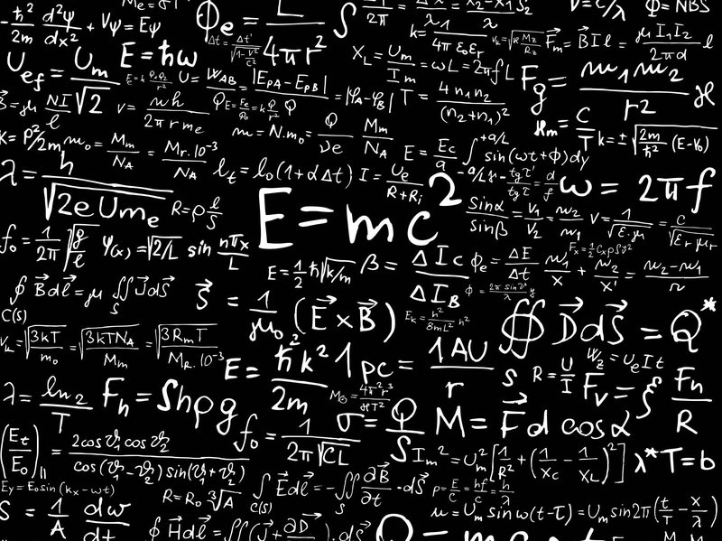

The revolutionary physicist used his imagination rather than fancy math to come up with his most famous and elegant equation. Albert Einstein’s theory of relativity is famous for predicting some really weird but true phenomena, like astronauts aging slower than people on Earth and solid objects changing their shapes at high speeds. But the thing is, if you pick up a copy of Einstein’s original paper on relativity from 1905, it’s a straightforward read. His text is plain and clear, and his equations are mostly just algebra—nothing that would bother a typical high-schooler. That’s because fancy math was never the point for Einstein. He liked to think visually, coming up with experiments in his mind’s eye and working them around in his head until he could see the ideas and physical principles with crystalline clarity. (Read “10 Things You (Probably) Didn’t Know About Einstein.”) To bring his process to life, National Geographic created an interactive version of one of Einstein’s most famous thought experiments: a parable about lightning strikes as seen from a moving train that shows how two observers can understand space and time in very different ways.
Here’s how Einstein got started on his thought experiments when he was just 16, and how it eventually led him to the most revolutionary equation in modern physics. 1895: Running Beside a Light Beam By this point, Einstein’s ill-disguised contempt for his native Germany’s rigid, authoritarian educational methods had already gotten him kicked out of the equivalent of high school, so he moved to Zurich in hopes of attending the Swiss Federal Institute of Technology (ETH). (Also see “Why the FBI Kept a 1,400-Page File on Einstein.”)
First, though, Einstein decided to put in a year of preparation at a school in the nearby town of Aarau—a place that stressed avant garde methods like independent thought and visualization of concepts. In that happy environment, he soon he found himself wondering what it would be like to run alongside a light beam. Einstein had already learned in physics class what a light beam was: a set of oscillating electric and magnetic fields rippling along at 186,000 miles a second, the measured speed of light. If he were to run alongside it at just that speed, Einstein reasoned, he ought to be able to look over and see a set of oscillating electric and magnetic fields hanging right next to him, seemingly stationary in space.
Yet that was impossible. For starters, such stationary fields would violate Maxwell’s equations, the mathematical laws that codified everything physicists at the time knew about electricity, magnetism, and light. The laws were (and are) quite strict: Any ripples in the fields have to move at the speed of light and cannot stand still—no exceptions. Worse, stationary fields wouldn’t jibe with the principle of relativity, a notion that physicists had embraced since the time of Galileo and Newton in the 17th century. Basically, relativity said that the laws of physics couldn’t depend on how fast you were moving; all you could measure was the velocity of one object relative to another.
But when Einstein applied this principle to his thought experiment, it produced a contradiction: Relativity dictated that anything he could see while running beside a light beam, including the stationary fields, should also be something Earthbound physicists could create in the lab. But nothing like that had ever been observed. This problem would bug Einstein for another 10 years, all the way through his university work at ETH and his move to the Swiss capital city of Bern, where he became an examiner in the Swiss patent office. That’s where he resolved to crack the paradox once and for all.
1904: Measuring Light From a Moving Train It wasn’t easy. Einstein tried every solution he could think of, and nothing worked. Almost out of desperation, he began to consider a notion that was simple but radical. Maybe Maxwell’s equations worked for everybody, he thought, but the speed of light was always constant.
When you saw a light beam zip past, in other words, it wouldn’t matter whether its source was moving toward you, away from you, or off to the side, nor would it matter how fast the source was going. You would always measure that beam’s velocity to be 186,000 miles a second. Among other things, that meant Einstein would never see the stationary, oscillating fields, because he could never catch the light beam.
This was the only way Einstein could see to reconcile Maxwell’s equations with the principle of relativity. At first, though, this solution seemed to have its own fatal flaw. Einstein later explained the problem with another thought experiment: Imagine firing a light beam along a railroad embankment just as a train roars by in the same direction at, say, 2,000 miles a second.
Someone standing on the embankment would measure the light beam’s speed to be the standard number, 186,000 miles a second. But someone on the train would see it moving past at only 184,000 miles a second. If the speed of light was not constant, Maxwell’s equations would somehow have to look different inside the railway carriage, Einstein concluded, and the principle of relativity would be violated.
This apparent contradiction left Einstein spinning his wheels for almost a year. But then, on a beautiful morning in May 1905, he was walking to work with his best friend Michele Besso, an engineer he had known since their student days in Zurich. The two men were talking with about Einstein’s dilemma, as they often did. And suddenly, Einstein saw the solution. He worked on it overnight, and when they met the next morning, Einstein told Besso, “Thank you. I’ve completely solved the problem.” May 1905: Lightning Strikes a Moving Train Einstein’s revelation was that observers in relative motion experience time differently: it’s perfectly possible for two events to happen simultaneously from the perspective of one observer, yet happen at different times from the perspective of the other. And both observers would be right.
Einstein later illustrated this point with another thought experiment. Imagine that you once again have an observer standing on a railway embankment as a train goes roaring by. But this time, each end of the train is struck by a bolt of lightning just as the train’s midpoint is passing. Because the lightning strikes are the same distance from the observer, their light reaches his eye at the same instant. So he correctly says that they happened simultaneously. Meanwhile, another observer on the train is sitting at its exact midpoint. From her perspective, the light from the two strikes also has to travel equal distances, and she will likewise measure the speed of light to be the same in either direction. But because the train is moving, the light coming from the lightning in the rear has to travel farther to catch up, so it reaches her a few instants later than the light coming from the front. Since the light pulses arrived at different times, she can only conclude the strikes were notsimultaneous—that the one in front actually happened first.
In short, Einstein realized, simultaneity is what’s relative. Once you accept that, all the strange effects we now associate with relativity are a matter of simple algebra. Einstein dashed off his ideas in a fever pitch and sent his paper in for publication just a few weeks later. He gave it a title—“On the Electrodynamics of Moving Bodies”—that spoke to his struggle to reconcile Maxwell’s equations with the principle of relativity. And he concluded it with a thank you to Besso (“I am indebted to him for several valuable suggestions”) that guaranteed his friend a touch of immortality. September 1905: Mass and Energy That first paper wasn’t the end of it, though. Einstein kept obsessing on relativity all through the summer of 1905, and in September he sent in a second paper as a kind of afterthought. It was based on yet another thought experiment. Imagine an object that’s sitting at rest, he said. And now imagine that it spontaneously emits two identical pulses of light in opposite directions. The object will stay put, but because each pulse carries off a certain amount of energy, the object’s energy content will decrease.
Now, said Einstein, what would this process look like to a moving observer? From her perspective, the object would just keep moving in a straight line while the two pulses flew off. But even though the two pulses’ speed would still be the same—the speed of light—their energies would be different: The pulse moving forward along the direction of motion would now have a higher energy than the one moving backward. With a little more algebra, Einstein showed that for all this to be consistent, the object not only had to lose energy when the light pulses departed, it had to lose a bit of mass, as well. Or, to put it another way, mass and energy are interchangeable. Einstein wrote down an equation that relates the two. Using today’s notation, which abbreviates the speed of light using the letter c, he produced easily the most famous equation ever written: E = mc2.